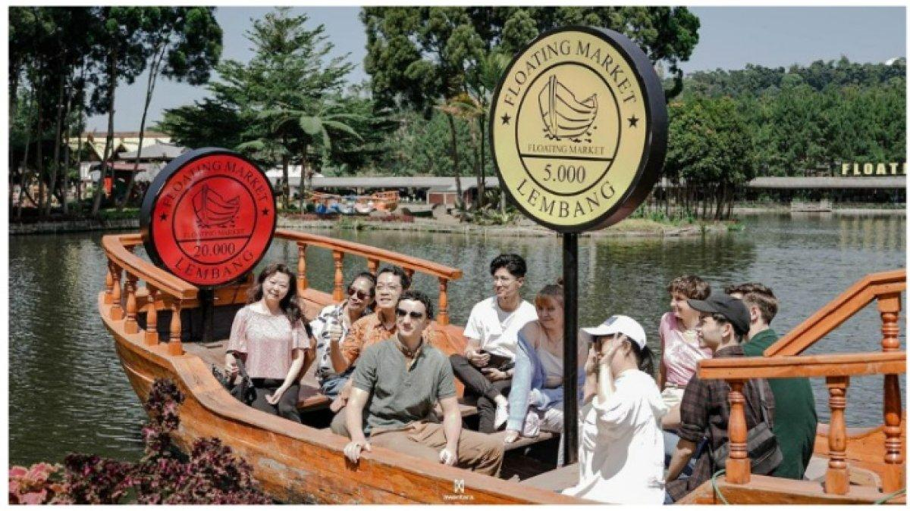
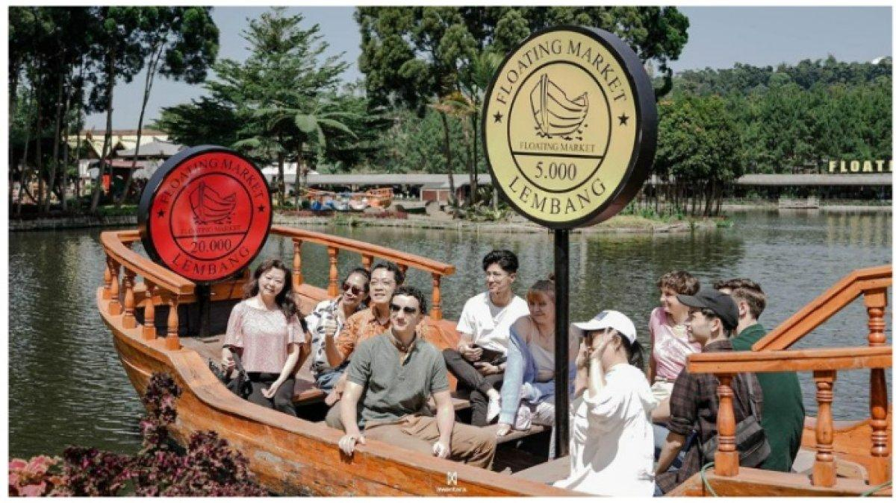

Floating Market Lembang adalah destinasi wisata populer di Lembang, Bandung, yang menampilkan pasar terapung di atas danau buatan. Para penjual menjajakan makanan dan minuman dari perahu, sehingga pengunjung dapat mencicipi kuliner khas sambil menikmati pemandangan pegunungan dan udara sejuk.
Aktivitas umum meliputi mencicipi jajanan tradisional, berfoto di spot Instagramable, naik perahu kecil, dan belanja oleh-oleh. Tips: datang pagi untuk menghindari keramaian, bawa uang tunai dalam pecahan kecil, kenakan pakaian hangat, dan ikuti petunjuk keselamatan saat berada di area perahu.